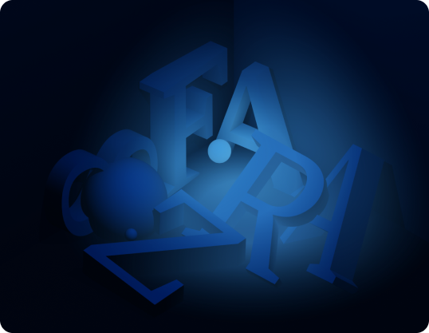

لورم ایپسوم متن ساختگی با تولید سادگی نامفهوم از صنعت چاپ، و با استفاده است.
منتشر شده در یک روز اخیرلورم ایپسوم متن ساختگی با تولید سادگی نامفهوم از صنعت چاپ، و با استفاده از طراحان گرافیک است، چاپگرها و متون بلکه روزنامه و مجله در ستون و سطرآنچنان که لازم است، و برای شرایط فعلی تکنولوژی مورد نیاز، و کاربردهای متنوع با هدف بهبود ابزارهای کاربردی می باشد.
لورم ایپسوم متن ساختگی با تولید سادگی نامفهوم از صنعت چاپ، و با استفاده از طراحان گرافیک است.